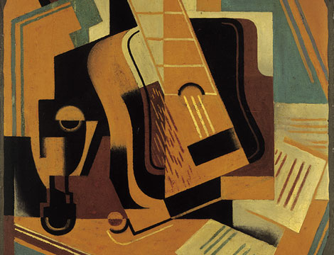
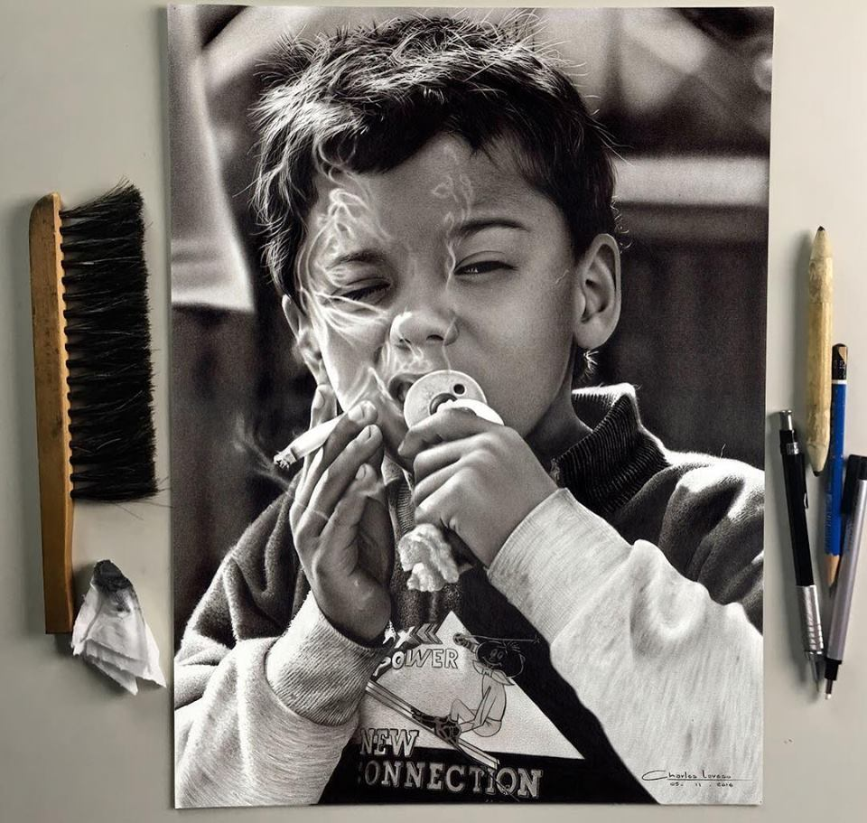
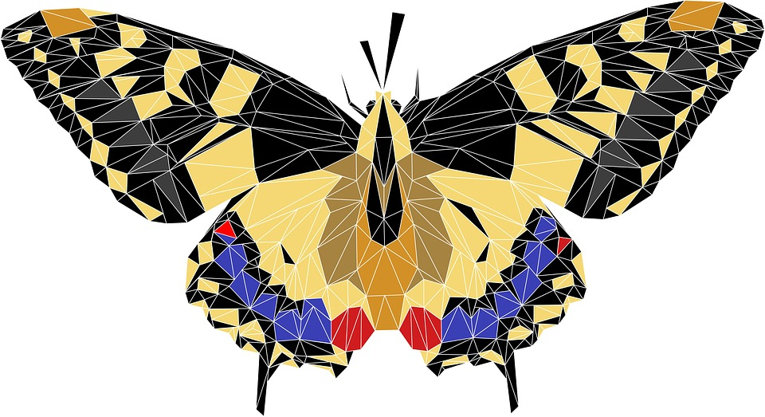
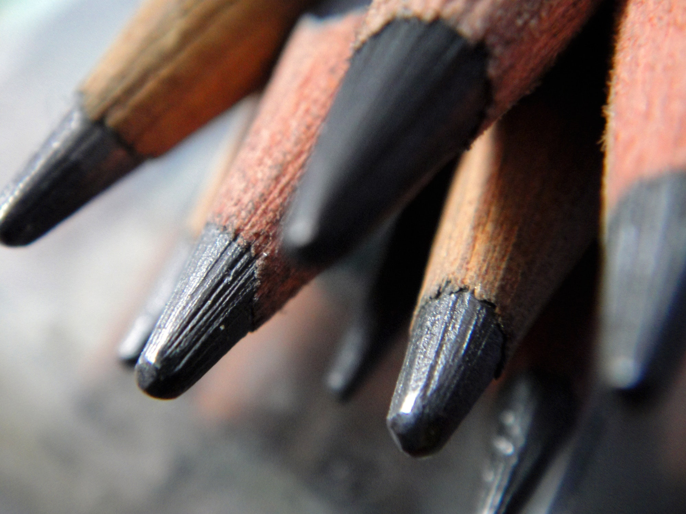
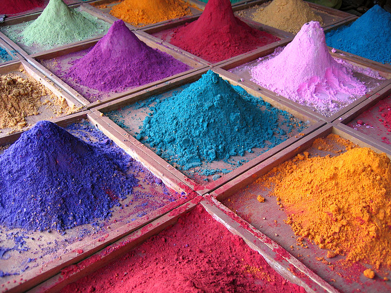

Dibujo artístico
Es la representación de un objeto por medio de líneas que
limitan sus
formas y
contornos.
Se
trata de una abstracción de nuestra mente que permite fijar la apariencia de la forma,
puesto que
el ojo solo percibe masas coloreadas de diversa intensidad. Los dibujos artísticos
suelen
ser
representaciones de objetos o escenas donde el artista ve, recuerda o imagina. Estos
pueden ser
realistas: un ejemplo son los retratos o los dibujos arquitectónicos. El dibujo también
puede
llegar al grado de perder cierta aproximación con la realidad (como las caricaturas),
relativamente alejados de la realidad (los dibujos animados y los cómics), hasta llegar
a
lo
surrealista y lo abstracto.
Dibujo geométrico
Es aquel que se representa por medio de gráficas planas. Constituye
un sistema de
enseñanza
estructurado para garantizar, tanto al alumno de los primeros años de las Escuelas
Técnicas como a
los de las facultades de Arquitectura e Ingeniería –bachilleres o peritos mercantiles–
un
rápido
manejo y posterior dominio de la mano en el plano. Tal surge de sus figuras y dibujos,
la
enumeración y designación de los útiles y la explicación del empleo de lo
estrictamente
necesario;
las características de la caligrafía técnica, sus grupos para realizar la práctica
adecuada y los
consejos para efectuar los ejercicios. También se incluyen las principales figuras
geométricas y
se detalla el modo lógico de construirlas, el enfoque fruto de una tarea minuciosa y
una
metodología adquirida día a día.

Dibujo técnico
El dibujo técnico es el lenguaje gráfico universal técnico normalizado.
Las aptitudes
para esta
clase de dibujo se aprenden, ya que debe cumplir con determinadas normas. Se subdivide
en
dibujo
técnico especializado, según la necesidad o aplicación las más utilizadas o difundidos
en
el
entorno técnico y profesional. Cada uno se caracteriza porque utiliza una simbología
propia y
específica generalmente normalizada legalmente.
Los planos que representan un mecanismo simple o una máquina formada por un conjunto
de
piezas se
denominan planos de conjunto, y los que representan un único elemento, planos de
pieza.
Los que
representan un conjunto de piezas con las indicaciones gráficas para su colocación y
ensamble, son
llamados planos.

Dibujo geodésico
En un mapa bidimensional del mundo, como si la tierra fuera plana,
deben trazarse los
meridianos
(círculos concéntricos verticales) en forma de líneas rectas verticales. En algunos
mapas,
los
paralelos (círculos paralelos horizontales) se dibujan como líneas horizontales
paralelas,
y los
meridianos son curvas que parten de los polos.

Instrumentos y materiales
Más que una técnica gráfica basada en el uso de la línea, el dibujo es la
expresión de
una
imagen que se hace en forma manual, es decir, se usa la mano para realizarlo. Los
instrumentos que se pueden usar son muchos, como también la superficie donde se puede
hacer.
Los más usados son el papel como soporte y el lápiz como el instrumento, pero actualmente
se
usan computadoras utilizando el teclado, mouse, o un lápiz óptico, más común en Tablet PC.
Instrumentos
instrumentos para dibujar son los lápices de grafito, como los lápices
de dibujo
(6b),
(2b) y (HB), los más importantes en el dibujo básico, la pluma estilográfica,
carboncillos,
regla, compás o escuadras, entre otros.

Tintas y pigmentos
El medio hace referencia a que tipo de tinta, pigmento o color va a ser
utilizado
sobre
la
superficie a dibujar. La herramienta utilizada puede ser seca como el grafito,
pasteles,
conté, o húmedo como marcadores, pluma o tinta. Los lápices acuosos pueden ser
utilizados
en
seco, pero al estar húmedos adquieren un tono diferente. Aunque es inusual, en
ocasiones
los
artistas trabajan con una clase de tinta invisible.

Soportes físicos
El soporte físico puede ser cualquiera, desde la antigüedad se ha ido
cambiando de un
formato a otro. Los más utilizados son aquellos basados en papel o cartón, aunque la
variedad llega a ser tan ingente que es difícil concretar. Según a que se destine el
dibujo,
se puede utilizar desde el lienzo para una obra representativa con fines decorativos
al
polipropileno para plasmar dibujos en carteles con fines publicitarios.